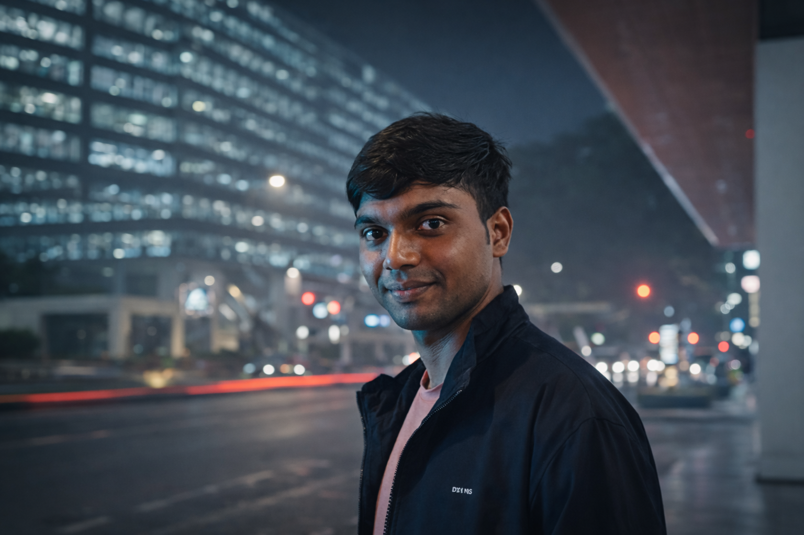

I am an undergraduate researcher in Computer Science Engineering, currently focusing on NLP, Interpretability, Social Computing, and Safety & Alignment in Large Language Models. My research aims to build pipelines that analyze biases and causal mechanisms within transformer models.
I will soon be joining the Hatzenbuehler Lab at Harvard University as a Visiting Research Fellow. Previously, I have worked with labs at Northwestern University, NTU Singapore, and the University of Hamburg.
B.E. in Computer Science Engineering
Visvesvaraya Technological University (VTU), India, 2026
Visiting UG Research Fellow
Harvard University (Hatzenbuehler Lab) | Mar 2026 – Jul 2026
Research Assistant Intern
Northwestern University (Kellogg School) | Jan 2026 – Jun 2026
Research Intern
NTU Singapore | Jan 2026 – Feb 2026
Research Intern (Organizer SemEval '26)
University of Hamburg (HCDS Lab) | Aug 2025 – Present
Research Intern
NIT Agartala | Jan 2025 – Dec 2025
Designed a fully automated pipeline for discovering, interpreting, and validating task-specific causal circuits in transformer models.
Fine-tuned Llama-3.2-11B-Vision-Instruct via LoRA for efficient adaptation to radiology image captioning using Unsloth.
Monitoring platform analyzing antidemocratic narratives across 500+ daily sources using RoBERTa and Llama 2 pipelines.